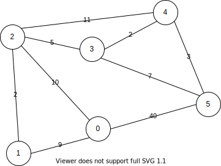

dijkstra的j不發音
特性
- 更新表格時以最短路徑取代
- 求出的表格皆為最短路徑
- 不含負數權重
- Single-Source Shortest Path演算法
實踐
- 設一個表格保存s到d的距離，預設為無限，s到s為0並且Dijkstra 保證正確結果。
- 同一點若遇到更優解取代之。
- 透過優先佇列選取當前最佳選擇(greedy)。
無向圖實踐
輸入格式為n代表邊數，輸入兩個節點與權重代表無向圖。
n
節點a 節點b 權重
...
起始節點

輸入範例
9
0 2 10
0 1 9
1 2 2
2 3 5
2 4 11
4 5 3
0 5 40
3 4 2
3 5 7
0
這裡採用鄰接矩陣(adjacency matrix)的方式保存無向圖
#define INF -1
int adj_matrix[NODE_MAX][NODE_MAX];
void load_matrix() {
int n;
int node1, node2, weight;
// init
for (int x = 0; x < NODE_MAX; x++)
for (int y = 0; y < NODE_MAX; y++) adj_matrix[x][y] = INF;
// number of edga
cin >> n;
// load edga
while (n > 0) {
cin >> node1 >> node2 >> weight;
adj_matrix[node1][node2] = weight;
adj_matrix[node2][node1] = weight;
n--;
}
}
dijkstra實做流程如下
- 初始化
- 設定起始節點放入優先佇列\(Q\)
extractMin取出優先佇列最佳選擇\(u\)- 標記已遍歷的節點，存入\(S\)集合中
- 遍歷任何鄰邊，並且更新距離，將未遍歷的節點加入優先佇列中。
int min_distance[NODE_MAX];
int predecessor[NODE_MAX];
bool visited[NODE_MAX];
void dijkstra(int start) {
priority_queue<NodePair, vector<NodePair>, Compare> pq;
// init
for (int i = 0; i < NODE_MAX; i++) {
min_distance[i] = INF;
predecessor[i] = -1;
visited[i] = false;
}
min_distance[start] = 0;
pq.push({start, 0});
while (!pq.empty()) {
// extract min
int u = pq.top().nodeIndex;
pq.pop();
// mark visited
visited[u] = true;
// for each u.adj
for (int v = 0; v < NODE_MAX; v++) {
if (adj_matrix[u][v] == INF) continue;
// relax
if (min_distance[v] == INF ||
min_distance[v] > min_distance[u] + adj_matrix[u][v]) {
predecessor[v] = u;
min_distance[v] = min_distance[u] + adj_matrix[u][v];
}
if (!visited[v]) pq.push({v, min_distance[v]});
}
}
}
範例程式完整原始碼參見github
範例輸出結果
distance
0 1 2 3 4 5 6 7 8 9
0 9 10 15 17 20 -1 -1 -1 -1
predecessor
0 1 2 3 4 5 6 7 8 9
-1 0 0 2 3 4 -1 -1 -1 -1
延伸
- A star
Algorithm Priority Queue